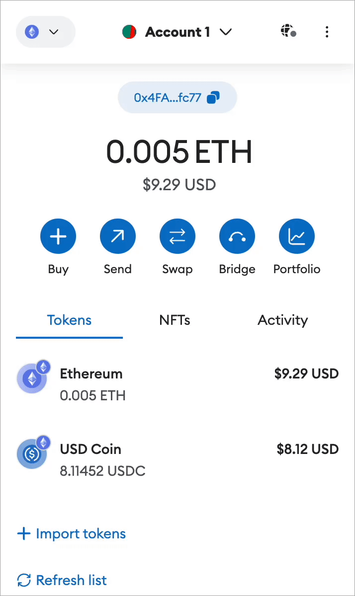
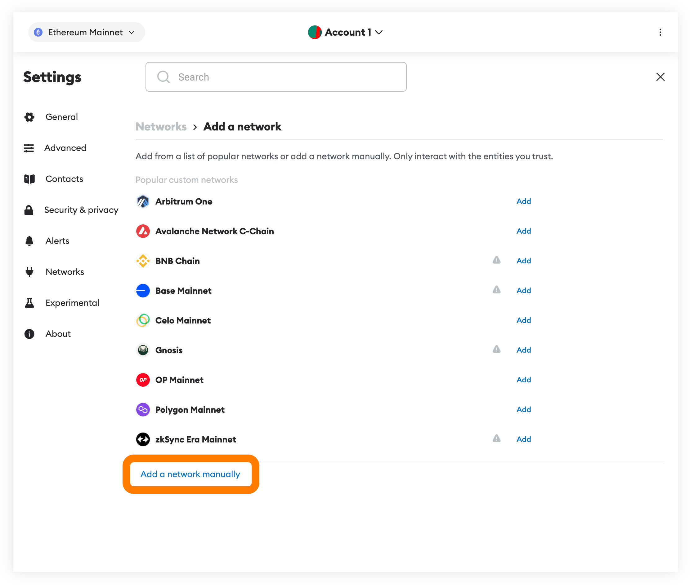
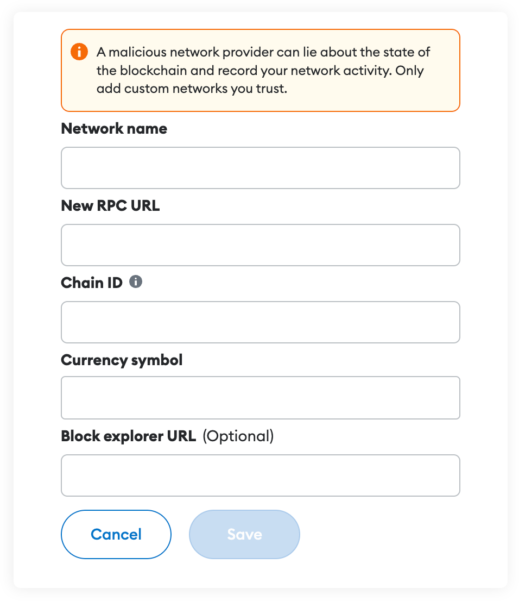

Adding Rails Network to MetaMask #
On smartphones:
- Open MetaMask and tap on the network list at the top of the app.
- Press Add Network.
- Select Custom Network tab.

- In this dialog, use the following variables:
- Network Name: Rails Network
- RPC URL: https://mainnet.steamexchange.io
- Currency Symbol: STEAMX
- Chain ID: 6278
- Explorer: https://explore.steamexchange.io
- Then click on Add to have our network in your Network list.
On extension:
- Open MetaMask extension and tap on the network list at the top-left of the app.
- Press Add Network.

- Scroll down and select “Add a network manually” link.

-
In this dialog, use the following variables:
- Network Name: Rails Network
- RPC URL: https://mainnet.steamexchange.io
- Currency Symbol: STEAMX
- Chain ID: 6278
- Explorer: https://explore.steamexchange.io

-
Then click on “Save” to have our network in your Network list.